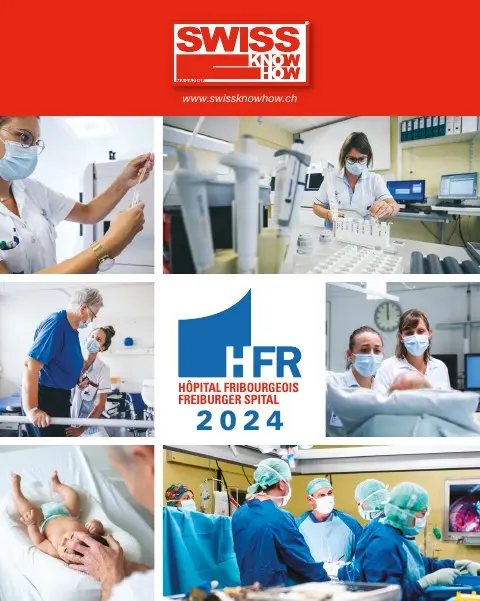
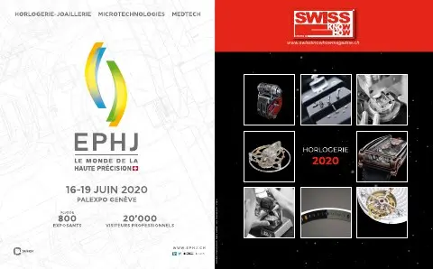
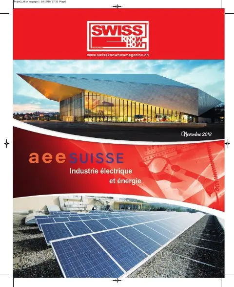
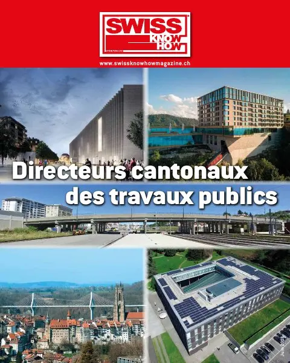
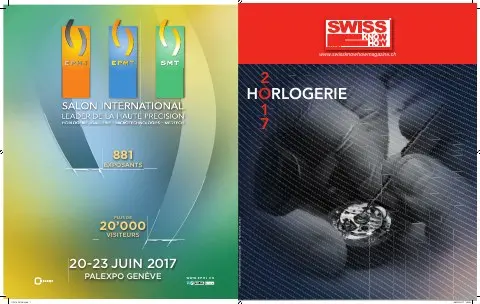
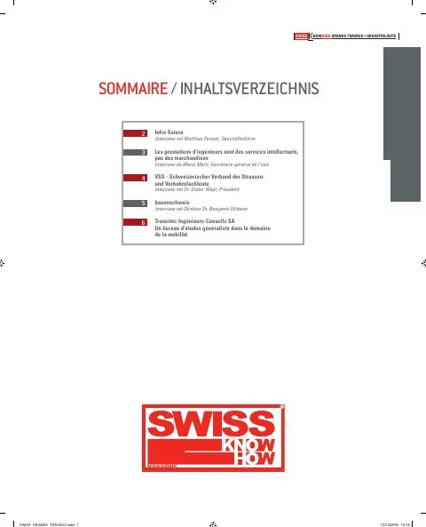
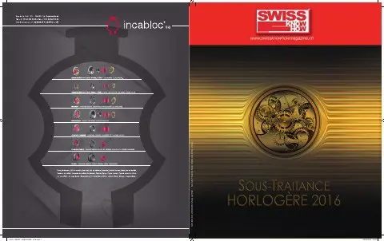
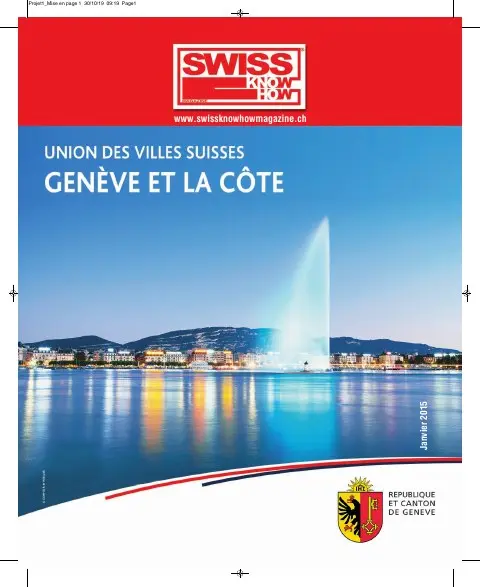
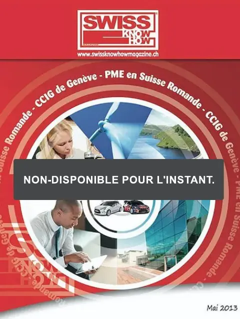

Magazines à télécharger
Toutes les éditions de Swiss Knowhow en PDF intégral. Cliquez sur une couverture pour voir le sommaire, ou téléchargez directement.

Grands travaux · 2026
Swiss Knowhow – Infrastructures routières et ferroviaires 2026









Collectivités · 2018
Swiss Knowhow – Directeurs cantonaux des travaux publics 2018







Économie régionale · 2015
Swiss Knowhow – Fribourg, Berne-Bienne et Tessin (mai 2015)



Collectivités · 2014
Swiss Knowhow – Union des villes suisses : Suisse alémanique (2014)

Collectivités · 2014
Swiss Knowhow – Union des villes suisses : Valais et Neuchâtel (2014)


Économie régionale · 2013
Swiss Knowhow – CCIG de Genève, PME en Suisse romande (mai 2013)

Économie régionale · 2013
Swiss Knowhow – Zürcher Wirtschaft / Zurich Economy (2013)

Économie régionale · 2012
Swiss Knowhow – Camera di commercio del Cantone Ticino (Cc-Ti) (2012)

Aucun magazine.